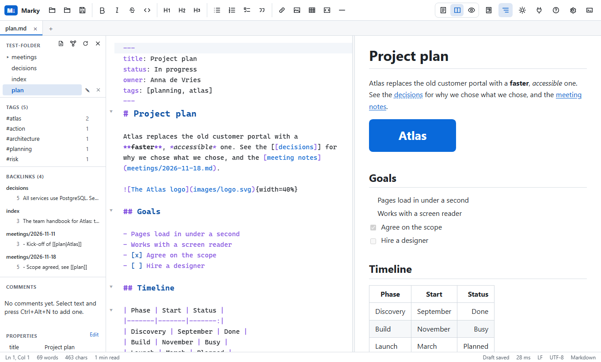
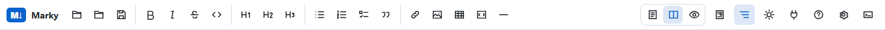
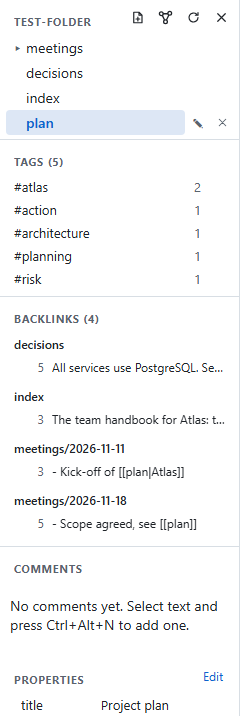
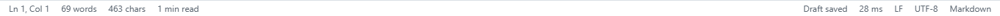
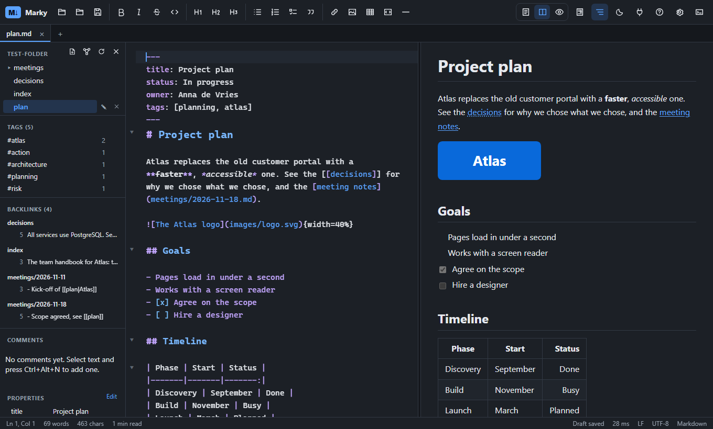

2. The Marky window

| Part | What it's for |
|---|---|
| Toolbar (top) | Open, open folder and save; formatting (bold, headings, lists, links, images, tables …); the layout (editor, split, preview); seamless view; the sidebar; theme; plugins; help; settings; the command palette |
| Tabs | One per open note. A dot marks unsaved changes; + opens a new note. Middle-click closes a tab |
| Sidebar (left) | The open folder's files, search, Git, tags, backlinks, comments, properties and the outline. Show or hide it with Ctrl+Shift+E |
| Editor | The Markdown text |
| Preview | What the note looks like. It follows the editor as you scroll and type |
| Status bar (bottom) | Line and column, words and characters, reading time, the draft state, line endings and encoding; warnings (images without alt text), who's here in a shared note, and the word goal |
The toolbar

From left to right: Open file, Open folder, Save; then the formatting buttons: bold, italic, strikethrough, code, headings 1–3, bulleted, numbered and task lists, quote, link, image, table, code block and horizontal line. Pointing at a button shows its name and shortcut.
On the right: the three layouts (Editor only, Split view, Preview only), Seamless view, the sidebar, the theme (light, dark, sepia, high contrast or the system's choice), Plugins, Help, Settings and the command palette.
The sidebar
The sidebar's panels appear when they have something to show:
- Files: the open folder as a tree. Click to open; ✎ renames, × deletes (also F2 and Del). The graph button shows how notes link.
- Search: Ctrl+Shift+F searches all notes in the folder.
- Git (desktop): changed files, commit and sync.
- Tags and Backlinks: see Linked notes.
- Comments: see Reviewing.
- Properties: the note's front matter as fields.
- Outline: the note's headings. Click one to go there.

On a narrow window the sidebar slides over the editor and closes again once you pick something.
The status bar

Click the parts that do something: the alt-text warning jumps to the first image without a description, Suggesting switches Suggest mode off, ● Live shows who's in a shared note, and the word goal shows your progress.
The command palette
F1 or Ctrl+Shift+P opens the palette: every command, searchable. Type a few letters (they don't have to be next to each other: exwo finds Export as Word), use ↑ ↓ and press Enter.
Ctrl+P is the file palette: find any note in the folder by name (Desktop: also recently opened files elsewhere).
Themes and language
The theme button switches between light, dark, sepia, high contrast (WCAG AAA) and system (follows your computer). Marky speaks English and Dutch; it follows your computer's language, or pick one in Settings › Appearance.
